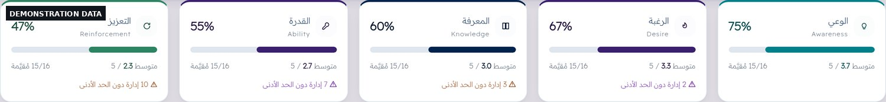
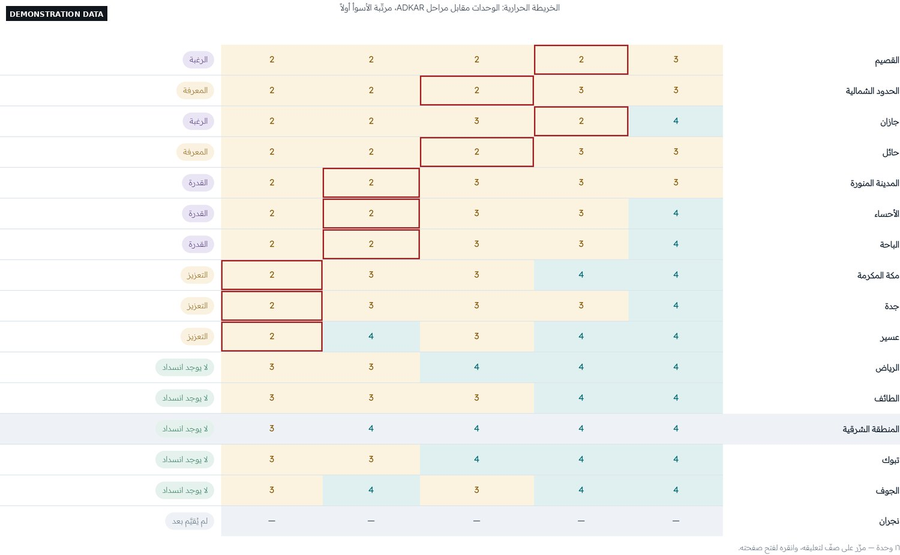
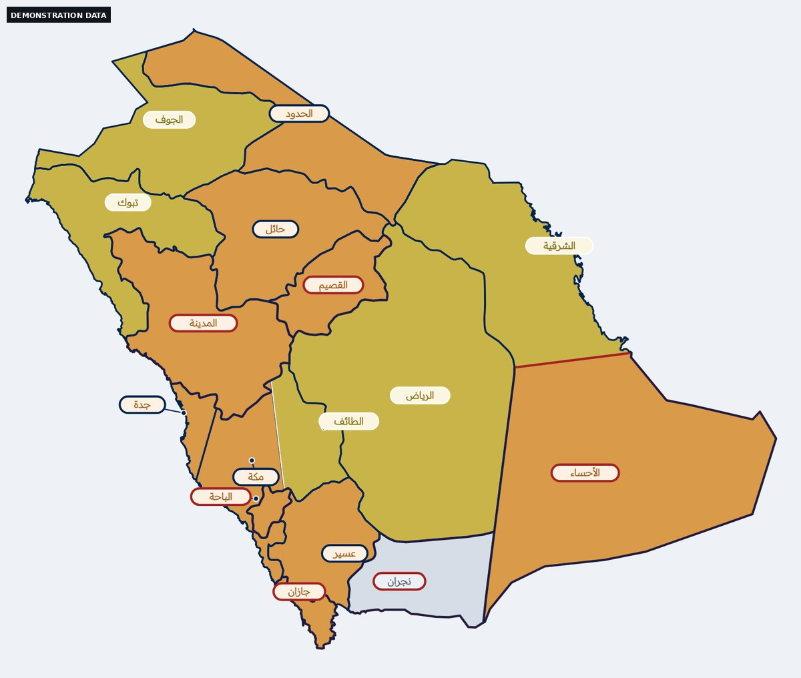
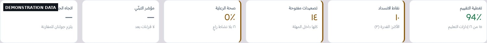

Case study 01دراسة حالة ٠١
ADKAR Change Management Platformمنصة إدارة التغيير ADKAR
A single-file application that runs a national change program offline for NIEPD's Center for Educational Leadership Development — assessing 16 regional education departments across six leadership levels, locating the stage that blocks each one, and issuing 16 personalized official letters in under two seconds.تطبيق في ملف واحد يدير برنامج تغيير وطنيًا دون اتصال لمركز تطوير القيادات التعليمية بالمعهد الوطني للتطوير المهني التعليمي: يقيّم ست عشرة إدارة تعليم على ستة مستويات قيادية، ويحدّد المرحلة التي تعطّل كل إدارة، ويُصدر ١٦ خطابًا رسميًا مخصَّصًا في أقل من ثانيتين.
Context
المشكلة
At the Center for Educational Leadership Development, an eight-person team leads a leadership change program spanning the Kingdom's 16 regional education departments and the schools under them. The work was tracked in Excel and Word files inside a shared folder. Nobody could see where each department stood, or which stage of the change was holding it back. Official letters to department heads were rewritten sixteen times by hand, with the form of address changing according to each recipient's rank.
في مركز تطوير القيادات التعليمية يقود فريق من ثمانية أشخاص برنامج تغيير يشمل ست عشرة إدارة تعليم في مناطق المملكة والمدارس التابعة لها. كان العمل يُدار بملفات Excel وWord في مجلد مشترك، فلا يظهر أين تقف كل إدارة ولا أي مرحلة تعطّل تقدّمها. أما الخطابات الرسمية فكانت تُكتب ست عشرة مرة يدويًا، مع اختلاف صيغة المخاطبة حسب رتبة كل مخاطَب.
Constraint
القيد
The environment permits no deployed service — no server, no database, no cloud. Team members work on different machines through a shared storage folder, and they don't all update software at the same time.
البيئة الحكومية لا تسمح بنشر خدمة: لا خادم ولا قاعدة بيانات ولا خدمة سحابية. وأعضاء الفريق يعملون على أجهزة مختلفة عبر مجلد تخزين مشترك، ولا يحدّثون التطبيق في وقت واحد.
Approach
القرار المعماري
I built the architecture around that constraint instead of trying to escape it. The result is one 1.55 MB file that opens by double-click and runs with no network. State stays local. The team syncs through JSON files in the shared folder, merged cell by cell on timestamp. When two values genuinely conflict — different values, valid stamps, inside the time window, different authors — the platform shows both and asks the user rather than silently picking one. Every schema change ships with a tested migration and a guarded rule: an older copy of the platform must still be able to read what a newer copy writes.
بنيتُ المعمارية حول هذا القيد بدل الالتفاف عليه. النتيجة ملف واحد بحجم ١٫٥٥ ميغابايت يُفتح بالنقر المزدوج ويعمل دون اتصال. الحالة محلية، والفريق يتزامن عبر ملفات JSON في المجلد المشترك بالدمج بالختم الزمني لكل خلية. وعند تعارض حقيقي — قيمتان مختلفتان، وختمان صالحان، وفارق زمني داخل النافذة، وكاتبان مختلفان — يعرض التطبيق النسختين على المستخدم ولا يحسم تلقائيًا. وكل تغيير في المخطط يصحبه ترحيل مختبَر وشرط محروس: أن تبقى النسخة القديمة قادرة على قراءة ما تكتبه النسخة الجديدة.

The model, as implemented
النموذج كما طُبِّق
The engine is a governed artifact, not a set of loose settings: it carries a version, an approval date and an approver, and it validates any file loaded into it. The five stages are fixed in order and meaning — the platform refuses a configuration with a different number of stages, on the grounds that ADKAR is the model, and five is not a preference. Everything around them is configurable: the scale, the pass threshold, escalation rules and evidence requirements.
المحرّك وثيقة محكومة لا مجموعة إعدادات: له إصدار وتاريخ اعتماد وجهة اعتماد، ويفحص أي ملف يُحمَّل إليه. والمراحل الخمس ثابتة الترتيب والمعنى — ترفض المنصة أي تهيئة بعدد مراحل مختلف، لأن ADKAR هو النموذج، وعددها ليس خيارًا. وما عدا ذلك قابل للتهيئة: المقياس، وحد العبور، وقواعد التصعيد، واشتراط الشواهد.
| Stage | The question it answers | What is being judged | Escalates | Evidence |
|---|---|---|---|---|
| Awareness · الوعي | Why now? | Whether stakeholders understand the reason for the change | — | — |
| Desire · الرغبة | What is in it for me? | Commitment and motivation, not compliance | Yes | — |
| Knowledge · المعرفة | How do I change? | Whether they know how to run the new practice | — | — |
| Ability · القدرة | Can I actually do it? | Observed behaviour in the field, not intention | Yes | Yes |
| Reinforcement · التعزيز | How do we sustain it? | Whether the practice has entered the routine | — | Yes |
| المرحلة | السؤال الذي تجيب عنه | ما الذي يُحكم عليه | تُصعَّد | تشترط شاهدًا |
|---|---|---|---|---|
| الوعي | لماذا الآن؟ | هل يدرك أصحاب المصلحة سبب الحاجة إلى التغيير | — | — |
| الرغبة | ما الفائدة لي؟ | الالتزام والدافعية لا مجرد الاستجابة | نعم | — |
| المعرفة | كيف أتغيّر؟ | هل يعرف كيف ينفّذ الممارسة الجديدة | — | — |
| القدرة | هل أستطيع التطبيق؟ | السلوك الملاحَظ في الميدان لا النية | نعم | نعم |
| التعزيز | كيف نستمر؟ | هل دخلت الممارسة في الروتين | — | نعم |
Scoring runs 1 to 5 with 3 as the pass mark, and every stage carries written anchors so that two assessors reach the same number. For Ability: 1 — has neither the time, the authority nor the tool; 3 — implements with visible effort and probable delay; 5 — implements within normal working hours without exceptional burden, evidenced by repeated on-time delivery with no reminder from us.
المقياس من ١ إلى ٥ وحد الاجتياز ٣، ولكل مرحلة شواهد مكتوبة تجعل مقيِّمَين يصلان إلى الرقم نفسه. مثال القدرة: ١ — لا يملك وقتًا ولا صلاحية ولا أداة؛ ٣ — ينفّذ بجهد ظاهر وتأخر محتمل؛ ٥ — ينفّذ ضمن الوقت المعتاد دون عبء استثنائي، والدليل إنجاز متكرر ضمن المواعيد دون تذكير منّا.
The rule the whole platform obeys
القاعدة التي تحكم المنصة كلها
The first stage scoring below the threshold is the blocking point, and it is the only one treated. A department strong on Awareness and weak on Ability does not get more awareness campaigns. Every dashboard, every report and every recommended action derives from that one rule — which is why the heatmap below marks a single cell per row rather than colouring everything red.
أول مرحلة تقل درجتها عن الحد هي نقطة الانسداد، وهي وحدها التي تُعالَج. فالإدارة القوية في الوعي والضعيفة في القدرة لا تُرسَل لها حملة وعي جديدة. وكل لوحة وكل تقرير وكل إجراء مقترح في المنصة مشتق من هذه القاعدة — ولذلك تُعلِّم الخريطة الحرارية خلية واحدة في كل صف بدل أن تصبغ الصف كله.

Calibration: the part that makes the numbers mean anything
المعايرة: ما يجعل للأرقام معنى
An assessment scale is worthless if two people reading the same department produce different numbers. Six calibration rules ship with the engine and appear beside the scoring table:
المقياس بلا قيمة إن أعطى شخصان للإدارة نفسها رقمين مختلفين. ست قواعد معايرة تأتي مع المحرّك وتظهر بجوار جدول التقييم:
- The first round is scored collectively in one session — the aim is convergent judgement, not speed of completion.
- A score rests on concrete evidence, not impression. With no evidence, the score is 1 or 2 — never 3.
- No 4 or 5 for a stage that has not been through at least one full cycle.
- The department is assessed as a system, not a person; individual names appear only where operationally necessary.
- Any score below 3 on Desire or Ability enters the escalation log within three working days.
- Adoption instruments — surveys, focus groups, field observation, dashboards — are evidence for the five stages, never substitutes for them.
- الجولة الأولى تُقيَّم جماعيًا في جلسة واحدة — الهدف تقارب الأحكام لا سرعة الإنجاز.
- الدرجة تُبنى على دليل ملموس لا على انطباع. وإن لم يوجد دليل فالدرجة ١ أو ٢، لا ٣.
- لا تُمنح درجة ٤ أو ٥ لمرحلة لم تمر عليها دورة كاملة واحدة على الأقل.
- التقييم للإدارة كمنظومة لا لشخص بعينه، والأسماء تُذكر عند الضرورة التشغيلية فقط.
- أي تقييم يقل عن ٣ في الرغبة أو القدرة يُقيَّد في سجل التصعيد خلال ثلاثة أيام عمل.
- أدوات قياس التبنّي — الاستبانات ومجموعات النقاش والملاحظة الميدانية واللوحات — أدلة على المراحل الخمس ولا تحل محلها.
The platform enforces the second rule rather than printing it: a passing score whose evidence reads only as a phone call or a routine reminder is rejected. Evidence has to carry something concrete — minutes, an attendance sheet, a field visit, a workshop, a plan, a report, an attachment or a link.
والمنصة تُنفّذ القاعدة الثانية ولا تكتفي بعرضها: الدرجة المجتازة التي شاهدها مجرد مكالمة أو تذكير روتيني تُرفض. فالشاهد يجب أن يحمل أثرًا ملموسًا — محضرًا أو كشف حضور أو زيارة ميدانية أو ورشة أو خطة أو تقريرًا أو مرفقًا أو رابطًا.
Who is assessed
من الذي يُقيَّم
Each department is scored across six leadership levels rather than as one block: the director general as decision-maker, the assistant director general who owns the file, the performance director and the school administration director on the delivery path, the quality control unit, and — deliberately included — the director of the general director's office, because that office is the real channel through which the decision-maker is reached. Sixteen departments across six levels and five stages is the grid the program is steered from.
تُقيَّم كل إدارة على ستة مستويات قيادية لا ككتلة واحدة: مدير عام التعليم بوصفه صاحب القرار، ومساعده مالك الملف، ومدير الأداء ومدير الإدارة المدرسية على مسار التنفيذ، ووحدة ضبط الجودة، ثم — عن قصد — مدير مكتب مدير التعليم، لأن المكتب هو قناة الوصول الفعلية إلى صاحب القرار. ست عشرة إدارة في ستة مستويات في خمس مراحل هي الشبكة التي يُقاد منها البرنامج.


Official correspondence
الخطابات الرسمية
A letter is written once and issued in 16 copies. In each copy the salutation, honorific and title are derived from the recipient's rank and gender according to the approved government protocol guide — ten ranks in total. A checker applies 24 rules from that guide, cites the page number for each, and fixes a violation in one click. PDF, Word and HTML all render from a single renderer, so the preview matches what prints. From opening the file to a package of 16 Word letters and an issuance record: 1.9 seconds and four clicks. Fifty-two approved message templates sit behind it, indexed by ADKAR stage and by the leadership level being addressed.
يُكتب الخطاب مرة واحدة فيخرج في ست عشرة نسخة، وتُشتق في كل نسخة عبارة المخاطبة والتكريم واللقب من رتبة المخاطَب وجنسه حسب دليل المخاطبات الرسمي المعتمد (عشر رتب). ويفحص المحتوى مدقق يطبّق ٢٤ قاعدة من الدليل مع أرقام صفحاتها، ويصلح المخالفة بنقرة. وتخرج ثلاثة مخرجات — PDF وWord وHTML — من راسم واحد، فتتطابق المعاينة مع المطبوع. من فتح الملف إلى حزمة فيها ١٦ خطاب Word وبيان صادر: ١٫٩ ثانية وأربع نقرات. وخلفها ٥٢ قالب رسالة معتمدًا مفهرسة بمرحلة ADKAR وبالمستوى القيادي المخاطَب.
Results
القياسات
| Measure | Before | After |
|---|---|---|
| Issuing 16 official letters | Manual, one by one | 1.9 s · 4 clicks |
| Merging 20 team files × 200 units | 3,905 ms | 258 ms (14.9× faster) |
| Rendering a 4,500-row table | 49 ms | 1 ms (virtual scrolling) |
| Build size | 4.62 MB | 1.46 MB |
| Load to interactive | 117 ms | 114 ms |
| المقياس | قبل | بعد |
|---|---|---|
| إصدار ١٦ خطابًا رسميًا | يدويًا، واحدًا واحدًا | ١٫٩ ثانية · ٤ نقرات |
| دمج ٢٠ ملف فريق × ٢٠٠ وحدة | ٣٬٩٠٥ مللي | ٢٥٨ مللي (أسرع ١٤٫٩ مرة) |
| عرض جدول من ٤٬٥٠٠ صف | ٤٩ مللي | ١ مللي (تمرير افتراضي) |
| حجم البناء | ٤٫٦٢ م.ب | ١٫٤٦ م.ب |
| التحميل حتى التفاعل | ١١٧ مللي | ١١٤ مللي |
Engineering quality
الاختبار والجودة
- 870 unit tests run against the built package itself inside
node:vm— not against a copy of the source. - 46 browser test files drive Chrome through the DevTools Protocol and measure what was actually rendered, in pixels: Word table column widths against the on-screen layout to within half a millimetre, the position of the honorific line, the selected font colour.
- An 11-stage CI gate stops at the first failure: static analysis, injection scanner, build, structural checks, documentation build, unit tests, smoke tests, accessibility in both themes, a write-path inventory and a coverage report.
- Acceptance matrices are generated from test names, so deleting a test that guards a rule stops the gate and names the rule that lost its guard.
- Zero WCAG 2.1 AA violations in light and dark themes, on Chrome and Edge.
- ٨٧٠ اختبار وحدة تعمل على الحزمة المبنية نفسها داخل
node:vmلا على نسخة من المصدر. - ٤٦ ملف اختبار في المتصفح تقود Chrome عبر بروتوكول DevTools وتقيس ما رُسم فعلًا بالبكسل: عرض أعمدة الجدول في Word مقابل اللوحة ضمن نصف مليمتر، وموضع عبارة التكريم، ولون الخط المختار.
- بوابة CI من ١١ خطوة تتوقف عند أول فشل: فحص ساكن، وماسح حقن، وبناء، وفحوص بنيوية، وبناء الأدلة، واختبارات الوحدة، واختبارات الدخان، والوصولية في المظهرين، وجرد مسارات الكتابة، وتقرير التغطية.
- مصفوفات القبول تُولَّد من أسماء الاختبارات، فحذف اختبار يحرس قاعدة يوقف البوابة ويسمّي القاعدة التي فقدت حارسها.
- صفر مخالفة وصولية بمعيار WCAG 2.1 AA في المظهرين الفاتح والداكن، على Chrome وEdge.
Working at the binary level
عمل على مستوى الملفات الثنائية
The identity typeface the institute uses predates Arabic support in computing: 256 characters, no Arabic Unicode table, no shaping tables, and a separate character for every contextual form of a letter in the private use area. No program could set Arabic text with it — not even Word, which substituted it silently. I wrote a tool that reads the font file and rebuilds it: a Unicode table, shaping tables for initial, medial and final forms, and the lam-alef ligature, copying the glyph outlines byte for byte without touching them. The typeface now works in the platform, in Word, and anywhere else.
خط الهوية المعتمد لدى المعهد كان من جيل سابق للعربية في الحاسب: ٢٥٦ محرفًا، بلا جدول يونيكود عربي وبلا جداول وصل، ولكل شكل من أشكال الحرف محرف مستقل في منطقة الاستعمال الخاص. فلم يكن يرسم به أي برنامج نصًا عربيًا، ولا Word الذي كان يستبدله صامتًا. كتبت أداة تقرأ ملف الخط وتعيد بناءه: جدول يونيكود، وجداول وصل للأشكال الأولية والوسطية والنهائية، ورباط لام-ألف، مع نسخ أشكال الحروف بايتًا بايتًا دون مساس. صار الخط يعمل في المنصة وفي Word وفي أي برنامج آخر.
Built as a template, not a one-off
نموذج يُهيَّأ لأي جهة
No organization name, colour or logo appears in the source. Identity ships as a JSON package that imports and exports with a fingerprint, and a six-step setup wizard configures a new organization's units, levels and engine rules.
لا يوجد اسم جهة ولا لون ولا شعار مكتوب في الشيفرة. الهوية كلها حزمة JSON تُستورد وتُصدَّر ببصمة، ومعالج تأسيس من ست خطوات يهيّئ وحدات الجهة الجديدة ومستوياتها وقواعد محرّكها.
My role
دوري في المشروع
Product owner and developer. Developed with an AI coding agent (Claude Code); I owned the architecture, the domain modeling, the review and the decision record — 150 architecture decisions, each written with the alternative that was rejected and why.
مالك المنتج والمطوّر. طُوّر بمساعدة وكيل برمجي (Claude Code)، وتوليت تصميم المعمارية ونمذجة المجال والمراجعة وتوثيق القرارات — ١٥٠ قرارًا معماريًا، كل واحد مكتوب مع البديل الذي استُبعد وسببه.
Try the demonstration buildجرّب النسخة التجريبية
A working copy of the platform loaded with demonstration data. No personal information of any kind.نسخة عاملة من المنصة محمّلة ببيانات توضيحية، بلا أي بيانات شخصية.
Open the demoافتح النسخة التجريبية